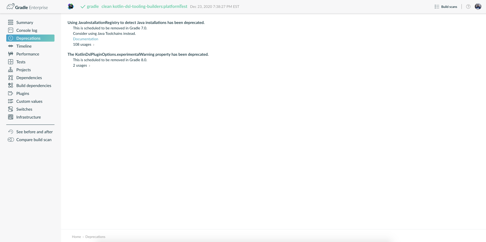

Upgrading your build from Gradle 7.x to 8.0
This chapter provides the information you need to migrate your Gradle 7.x builds to Gradle 8.0. For migrating from Gradle 6.x or earlier, complete the older migration guide first.
We recommend the following steps for all users:
-
Try running
gradle help --scanand view the deprecations view of the generated build scan.This is so that you can see any deprecation warnings that apply to your build.
Alternatively, you could run
gradle help --warning-mode=allto see the deprecations in the console, though it may not report as much detailed information. -
Update your plugins.
Some plugins will break with this new version of Gradle, for example because they use internal APIs that have been removed or changed. The previous step will help you identify potential problems by issuing deprecation warnings when a plugin does try to use a deprecated part of the API.
-
Run
gradle wrapper --gradle-version 8.2to update the project to 8.2. -
Try to run the project and debug any errors using the Troubleshooting Guide.
Upgrading from 7.6 and earlier
Warnings that are now errors
Referencing tasks in an included build with finalizedBy, mustRunAfter or shouldRunAfter
Referencing tasks contained in an included build with any of the following methods now results in an execution time error:
-
finalizedBy -
mustRunAfter -
shouldRunAfter
Creating TAR trees from resources without backing files
Creating a TAR tree from a resource with no backing file is no longer supported.
Instead, convert the resource to a file and use project.tarTree() on the file.
For more information, see TAR trees from resources without backing files.
Using invalid Java toolchain specifications
Usage of invalid Java toolchain specifications is no longer supported. Related build errors can be avoided by making sure that language version is set on all toolchain specifications. See user manual for more information.
Using automatic toolchain downloading without having a repository configured
Automatic toolchain downloading without explicitly providing repositories to use is no longer supported. See user manual for more information.
Changing test framework after setting test framework options is now an error
When configuring the built-in test task for Java, Groovy, and Scala projects, Gradle no longer allows you to
change the test framework used by the Test task after configuring options.
This was deprecated since it silently discarded configuration in some cases.
The following code example now produces an error:
test {
options {
}
useJUnitPlatform()
}Instead, you can:
-
set the test framework before configuring options
-
migrate to the JVM Test Suite Plugin
test {
// select test framework before configuring options
useJUnitPlatform()
options {
}
}Additionally, setting the test framework multiple times to the same framework now accumulates any options that might be set on the framework. Previously, each time the framework was set, it would cause the framework options to be overwritten.
The following code now results in both the "foo" and "bar" tags to be included for the test task:
test {
useJUnitPlatform {
includeTags("foo")
}
}
tasks.withType(Test).configureEach {
// previously, this would overwrite the included tags to only include "bar"
useJUnitPlatform {
includeTags("bar")
}
}Removed APIs
Legacy ArtifactTransform API
The legacy ArtifactTransform API has been removed.
For more information, see Registering artifact transforms extending ArtifactTransform.
Legacy IncrementalTaskInputs API
The legacy IncrementalTaskInputs API has been removed.
For more information, see IncrementalTaskInputs type is deprecated.
This change also affects Kotlin Gradle Plugin and Android Gradle Plugin.
With Gradle 8.0 you should use Kotlin Gradle Plugin 1.6.10 or later and Android Gradle Plugin 7.3.0 with android.experimental.legacyTransform.forceNonIncremental=true property or later.
Legacy AntlrSourceVirtualDirectory API
The legacy AntlrSourceVirtualDirectory API has been removed.
This change affects the antlr plugin.
In Gradle 8.0 and above, use the AntlrSourceDirectorySet source set extension instead.
JvmPluginsHelper
A deprecated configureDocumentationVariantWithArtifact method of the JvmPluginsHelper class which did not require a FileResolver has been removed.
This was an internal API, but may have been accessed by plugins.
Supply a FileResolver to the overloaded version of this method instead.
Groovydoc API Cleanup
The deprecated isIncludePrivate property of the Groovydoc task type has been removed.
Use the access property along with the GroovydocAccess#PRIVATE constant instead.
JavaApplication API Cleanup
The deprecated mainClassName property of the JavaApplication interface has been removed.
Use the mainClass property instead.
DefaultDomainObjectSet API Cleanup
The deprecated DefaultDomainObjectSet(Class) constructor has been removed.
This was an internal API, but may have been used by plugins.
JacocoPluginExtension API Cleanup
The deprecated reportsDir property of the JacocoPluginExtension has been removed.
Use the reportsDirectory property instead.
DependencyInsightReportTask API Cleanup
The deprecated legacyShowSinglePathToDependnecy property of the DependencyInsightReportTask task type has been removed.
Use the showSinglePathToDependency property instead.
Report and TestReport API Cleanup
The deprecated destination, and enabled properties of the Report type have been removed.
Use the outputLocation and required properties instead.
The deprecated testResultDirs property of the TestReport task type has been removed.
Use the testResults property instead.
JacocoMerge Task Removed
The deprecated JacocoMerge task type has been removed.
The same functionality is also available on the JacocoReport task.
JavaExec API Cleanup
The deprecated main property of the JavaExec task type has been removed.
Use the mainClass property instead.
AbstractExecTask API Cleanup
The deprecated execResult getter property of the AbstractExecTask task type has been removed.
Use the executionResult getter property instead.
AbstractTestTask API Cleanup
The deprecated binResultsDir property of the AbstractTestTask task type has been removed.
Use the binaryResultsDirectory property instead.
SourceDirectorySet API Cleanup
The deprecated outputDir property of the SourceDirectorySet type has been removed.
Use the destinationDirectory property instead.
VersionCatalog API Cleanup
The deprecated findDependency(String) method and dependencyAliases property of the VersionCatalog type have been removed.
Use the findLibrary(String) method and libraryAliases property instead.
The deprecated alias(String) method of the VersionCatalogBuilder type has been removed.
Use the library(String, String, String) or plugin(String, String) methods instead.
WorkerExecutor API Cleanup
The deprecated submit(Class, Action) method of the WorkerExecutor interface has been removed.
Instead, obtain a WorkQueue via the noIsolation(), classLoaderIsolation(), and processIsolation(), methods and use the submit(Class, Action) method on the WorkQueue instead.
DependencySubstitution API Cleanup
The deprecated with(ComponentSelector) method of the DependencySubstitution type’s inner Substitution type’s has been removed.
Use the using(ComponentSelector) method instead.
AbstractArchiveTask API Cleanup
The deprecated appendix, archiveName, archivePath, baseName, classifier, destinationDir, extension and version properties of the AbstractArchiveTask task type have been removed.
Use the archiveAppendix, archiveFileName , archiveFile, archiveBaseName, archiveClassifier, destinationDirectory, archiveExtension and archiveVersion properties instead.
IdeaModule API Cleanup
The deprecated testSourceDirs and testResourceDirs properties of the IdeaModule type have been removed.
This affects the org.gradle.plugins.ide.idea.model.IdeaModule type, not the org.gradle.tooling.model.idea.IdeaModule type.
Use the testSources and testResources properties instead.
AbstractCompile API Deprecations
The previously deprecated destinationDir property of the AbstractCompile remains deprecated, and will now emit a deprecation warning upon use.
It is now scheduled for removal in Gradle 9.0.
Use the destinationDirectory property instead.
ResolvedComponentResult API Cleanup
The deprecated getVariant method of the ResolvedComponentResult interface has been removed.
Use the getVariants method instead.
Code quality plugins API Cleanup
The deprecated antBuilder property of the Checkstyle, CodeNarc and Pmd task types has been removed.
Use the Project type’s ant property instead.
Usage API Cleanup
The deprecated public fields JAVA_API_CLASSES, JAVA_API_JARS, JAVA_RUNTIME_CLASSES, JAVA_RUNTIME_JARS and JAVA_RUNTIME_RESOURCES of the Usage type have been removed.
The values are available in the internal JavaEcosystemSupport class for compatibility with previously published modules, but should not be used for any new publishing.
ExternalDependency API Cleanup
The deprecated setForce(boolean) method of the ExternalDependency interface has been removed.
Use the version(Action) method to configure strict versions instead.
Build-scan method removed from Kotlin DSL
The deprecated build-scan plugin application method has been removed from the Kotlin DSL.
Use the gradle-enterprise method instead.
Configuration extension methods removed from Kotlin DSL
The Kotlin DSL added specialized extension methods for NamedDomainObjectProvider<Configuration> that are available when looking up a configuration by name.
These extensions allowed builds to access some properties of a Configuration when using an instance of NamedDomainObjectProvider<Configuration> directly:
configurations.compileClasspath.files // equivalent to configurations.compileClasspath.get().files
configurations.compileClasspath.singleFile // equivalent to configurations.compileClasspath.get().singleFileAll of these extensions have been removed from the API, but the methods are still available for plugins compiled against older versions of Gradle.
-
NamedDomainObjectProvider<Configuration>.addToAntBuilder
-
NamedDomainObjectProvider<Configuration>.all
-
NamedDomainObjectProvider<Configuration>.allArtifacts
-
NamedDomainObjectProvider<Configuration>.allDependencies
-
NamedDomainObjectProvider<Configuration>.allDependencyConstraints
-
NamedDomainObjectProvider<Configuration>.artifacts
-
NamedDomainObjectProvider<Configuration>.asFileTree
-
NamedDomainObjectProvider<Configuration>.asPath
-
NamedDomainObjectProvider<Configuration>.attributes
-
NamedDomainObjectProvider<Configuration>.buildDependencies
-
NamedDomainObjectProvider<Configuration>.contains
-
NamedDomainObjectProvider<Configuration>.copy
-
NamedDomainObjectProvider<Configuration>.copyRecursive
-
NamedDomainObjectProvider<Configuration>.defaultDependencies
-
NamedDomainObjectProvider<Configuration>.dependencies
-
NamedDomainObjectProvider<Configuration>.dependencyConstraints
-
NamedDomainObjectProvider<Configuration>.description
-
NamedDomainObjectProvider<Configuration>.exclude
-
NamedDomainObjectProvider<Configuration>.excludeRules
-
NamedDomainObjectProvider<Configuration>.extendsFrom
-
NamedDomainObjectProvider<Configuration>.fileCollection
-
NamedDomainObjectProvider<Configuration>.files
-
NamedDomainObjectProvider<Configuration>.filter
-
NamedDomainObjectProvider<Configuration>.getTaskDependencyFromProjectDependency
-
NamedDomainObjectProvider<Configuration>.hierarchy
-
NamedDomainObjectProvider<Configuration>.incoming
-
NamedDomainObjectProvider<Configuration>.isCanBeConsumed
-
NamedDomainObjectProvider<Configuration>.isCanBeResolved
-
NamedDomainObjectProvider<Configuration>.isEmpty
-
NamedDomainObjectProvider<Configuration>.isTransitive
-
NamedDomainObjectProvider<Configuration>.isVisible
-
NamedDomainObjectProvider<Configuration>.minus
-
NamedDomainObjectProvider<Configuration>.outgoing
-
NamedDomainObjectProvider<Configuration>.plus
-
NamedDomainObjectProvider<Configuration>.resolutionStrategy
-
NamedDomainObjectProvider<Configuration>.resolve
-
NamedDomainObjectProvider<Configuration>.resolvedConfiguration
-
NamedDomainObjectProvider<Configuration>.setDescription
-
NamedDomainObjectProvider<Configuration>.setExtendsFrom
-
NamedDomainObjectProvider<Configuration>.setTransitive
-
NamedDomainObjectProvider<Configuration>.singleFile
-
NamedDomainObjectProvider<Configuration>.state
-
NamedDomainObjectProvider<Configuration>.withDependencies
You should prefer to directly reference the methods from Configuration.
Potential breaking changes
JavaForkOptions getJvmArgs() and getAllJvmArgs() return immutable lists
The lists of JVM arguments retrieved from the JavaForkOptions interface are now immutable.
Previously, modifications of the returned list were silently ignored.
Nullable annotations better reflect actual nullability of API
In some APIs, nullability was not correctly annotated and APIs that did allow null or returned null were marked as non-null. In Java or Groovy, this mismatch did not cause problems at compile time. In Kotlin, this mismatch made valid code difficult to write because the language would not allow you to pass null.
One particular example was returning null from a Provider#map or Provider#flatMap. In both APIs, Gradle allows you to return null, but in the Kotlin DSL this was considered illegal.
This correction may cause compilation errors in code that expected non-null.
Plugins, tasks and extension classes are abstract
Most public classes for plugins, tasks and extensions have been made abstract. This was done to make it easier to remove boilerplate from Gradle’s implementation.
Plugins that are affected by this change should make their classes abstract as well.
Gradle uses runtime class decoration to implement abstract methods as long as the object is instantiated via ObjectFactory or some other automatic mechanism (like managed properties).
Those methods should never be directly implemented.
Wrapper task configuration
If gradle-wrapper.properties contains the distributionSha256Sum property, you must specify a sum.
You can specify a sum in the wrapped task configuration or with the --gradle-distribution-sha256-sum task option.
Changes in the AbstractCodeQualityPlugin class
The deprecated AbstractCodeQualityPlugin.getJavaPluginConvention() method was removed in Gradle 8.0.
You should use JavaPluginExtension instead.
Remove implicit --add-opens for Gradle workers
Before Gradle 8.0, Gradle workers on JDK9+ automatically opened JDK modules java.base/java.util and java.base/java.lang by passing --add-opens CLI arguments.
This enabled code executed in a Gradle worker to perform deep reflection on JDK internals without warning or failing.
Workers no longer use these implicit arguments.
This affects all internal Gradle workers, which are used for a variety of tasks:
-
code-quality plugins (Checkstyle, CodeNarc, Pmd)
-
ScalaDoc
-
AntlrTask
-
JVM compiler daemons
-
tasks executed using process isolation via the Worker API
New warnings and errors may appear in any tools, extensions, or plugins that perform deep reflection into JDK internals with the worker API.
These errors can be resolved by updating the violating code or dependency. Updates may include:
-
code-quality tools
-
annotation processors
-
any Gradle plugins which use the worker API
For some examples of possible error or warning outputs which may arise due to this change, see Removes implicit --add-opens for test workers.
SourceSet classesDirs no longer depends upon the entire SourceSet as a task dependency
Prior to Gradle 8.0, the task dependencies for SourceSetOutput.classesDirs
included tasks that did not produce class files.
This meant that a task which depends on classesDirs would also depend on classes, processResources, and any other task dependency added to SourceSetOutput.
This behavior was potentially an error because the classesDirs property did not contain the output for processResources.
Since 8.0, this implicit dependency is removed.
Now, depending on classesDirs only executes the tasks which directly produce files in the classes directories.
Consider the following buildscript:
plugins {
id 'java-library'
}
// Task lists all files in the given classFiles FileCollection
tasks.register("listClassFiles", ListClassFiles) {
classFiles.from(java.sourceSets.main.output.classesDirs)
}Previously, the listClassFiles task depended on compileJava, processResources, and classes.
Now, only compileJava is a task dependency of listClassFiles.
If a task in your build relied on the previous behavior, you can instead use the entire
SourceSetOutput as an input, which contains all classes and resources.
If that is not feasible, you can restore the previous behavior by adding more task dependencies to classesDirs:
java {
sourceSets {
main {
output.classesDirs.builtBy(output)
}
}
}Minimal supported Kotlin Gradle Plugin version changed
Gradle 7.x supports Kotlin Gradle Plugin 1.3.72 and above. Kotlin Gradle Plugin versions above 1.6.21 are not tested with Gradle 7.x. Gradle 8.x supports Kotlin Gradle Plugin 1.6.10 and above. You can use a lower Kotlin language version by modifying the language version and api version setting in the Kotlin compilation tasks.
Minimal supported Android Gradle Plugin version changed
Gradle 7.x supports Android Gradle Plugin (AGP) 4.1 and above. AGP versions above 7.3 are not tested with Gradle 7.x. Gradle 8.x supports AGP 8 and above. Gradle 8.x supports AGP 7.3 and above if you configure the following property:
android.experimental.legacyTransform.forceNonIncremental=trueChange to AntBuilder parent class
Previously, org.gradle.api.AntBuilder extended the deprecated groovy.util.AntBuilder class.
It now extends groovy.ant.AntBuilder.
PluginDeclaration is not serializable
org.gradle.plugin.devel.PluginDeclaration is not serializable anymore.
If you need to serialize it, you can convert it into your own, serializable class.
Gradle does not use equals for serialized values in up-to-date checks
Gradle now does not try to use equals when comparing serialized values in up-to-date checks. For more information see Relying on equals for up-to-date checks is deprecated.
Task and transform validation warnings introduced in Gradle 7.x are now errors
Gradle introduced additional task and artifact transform validation warnings in the Gradle 7.x series. Those warnings are now errors in Gradle 8.0 and will fail the build.
Warnings that became errors:
-
An input file collection that can’t be resolved.
-
An input or output file or directory that cannot be read. See Declaring input or output directories which contain unreadable content.
-
Using a
java.io.Fileas the@InputArtifactof an artifact transform. -
Using an input with an unknown implementation. See Cannot use an input with an unknown implementation.
-
Missing dependencies between tasks. See Implicit dependencies between tasks.
-
Converting files to a classpath where paths contain file separator.
Gradle does not ignore empty directories for file-trees with @SkipWhenEmpty
Previously Gradle used to detect if an input file collection annotated with @SkipWhenEmpty consisted only of file trees and then ignored directories automatically.
To ignore directories in Gradle 8.0 and later, the input property needs to be explicitly annotated with @IgnoreEmptyDirectories.
For more information see File trees and empty directory handling.
Format of JavaVersion has changed for Java 9 and Java 10
The string format of the JavaVersion has changed to match the official Java versioning.
Starting from Java 9, the language version must not contain the 1. prefix.
This affects the format of the sourceCompatiblity and targetCompatibility properties on the JavaCompile task and JavaExtension.
The old format is still supported when resolving the JavaVersion from a string.
Gradle 7.6 |
Gradle 8.0 |
|
|
|
|
|
|
|
|
Precompiled script plugins use strict Kotlin DSL accessor generation by default
In precompiled script plugins, type safe Kotlin DSL accessor generation now fails the build if a plugin fails to apply.
Starting in Gradle 7.6, builds could enable this behavior with the org.gradle.kotlin.dsl.precompiled.accessors.strict system property.
This behavior is now default.
The property has been deprecated and its usage should be removed.
You can find more information about this property below.
Init scripts are applied to buildSrc builds
Init scripts specified using --init-script are now applied to buildSrc builds. In previous releases these were applied to included builds but not `buildSrc builds.
This behavior is now consistent for buildSrc and included builds.
Gradle no longer runs the build task for buildSrc builds
When Gradle builds the output of buildSrc it runs only the tasks that produce that output, which is typically the jar task.
In previous releases Gradle would run the build task.
This means that the tests of buildSrc and its subprojects are not built and executed automatically and must now be explicitly requested.
This behavior is now consistent for buildSrc and included builds.
You can run the tests for buildSrc in the same way as projects in included builds, for example by running gradle buildSrc:build.
buildFinished { } hook for buildSrc runs after all tasks have executed
The buildFinished {} hook for buildSrc now runs after all tasks have completed. In previous releases this hook would run immediately after
the tasks for buildSrc completed and before any requested tasks started.
This behavior is now consistent for buildSrc and included builds.
Changes to paths of included builds
In order to handle conflicts between nested included build names better, Gradle now uses the directory hierarchy of included builds to assign the build path. If you are running tasks from the command line in nested included builds, then you may need to adjust your invocation.
For example, if you have the following hierarchy:
.
├── settings.gradle.kts
└── nested
├── settings.gradle.kts
└── nestedNested
└── settings.gradle.ktsincludeBuild("nested")includeBuild("nestedNested").
├── settings.gradle
└── nested
├── settings.gradle
└── nestedNested
└── settings.gradleincludeBuild("nested")includeBuild("nestedNested")Before Gradle 8.0, you ran gradle :nestedNested:compileJava.
In Gradle 8.0 the invocation changes to gradle :nested:nestedNested:compileJava.
Adding jst.ejb with the eclipse wtp plugin now removes the jst.utility facet
The eclipse wtp plugin adds the jst.utility facet to java projects.
Now, adding the jst.ejb facet implicitly removes the jst.utility facet:
eclipse {
wtp {
facet {
facet name: 'jst.ejb', version: '3.2'
}
}
}Simplifying PMD custom rules configuration
Previously, you had to explicitly configure PMD to ignore default rules with ruleSets = [].
In the Gradle 8.0, setting ruleSetConfig or ruleSetFiles to a non-empty value implicitly ignores default rules.
Report getOutputLocation return type changed from Provider to Property
The outputLocation property of the Report now returns a value of type Property<? extends FileSystemLocation>.
Previously, outputLocation returned a value of type Provider<? extends FileSystemLocation>.
This change makes the Report API more internally consistent, and allows for more idiomatic configuration of reporting tasks.
The former, now @Deprecated usage:
tasks.named('test') {
reports.junitXml.setDestination(layout.buildDirectory.file('reports/my-report-old').get().asFile) // DEPRECATED
}can be replaced with:
tasks.named('test') {
reports.junitXml.outputLocation = layout.buildDirectory.dir('reports/my-report')
}Many built-in and custom reports, such as those used by JUnit, implement this interface. Plugins compiled against an earlier version of Gradle containing the previous method signature may need to be recompiled to be used with newer versions of Gradle containing the new signature.
Removed external plugin validation plugin
The incubating plugin ExternalPluginValidationPlugin has been removed.
Use the java-gradle-plugin's validatePlugins task to validate plugins under development.
Reproducible archives can change compared to past versions
Gradle changes the compression library used for creating archives from an Ant based one to Apache Commons Compress™. As a consequence archives created from the same content, are unlikely to end up identical byte-by-byte to their older versions, created with the old library.
Upgrade to Kotlin 1.8.10
The embedded Kotlin has been updated to Kotlin 1.8.10. Also see Kotlin 1.8.0 release notes. For more information, see the release notes for Kotlin
Updated the Kotlin DSL to Kotlin API Level 1.8
Previously, the Kotlin DSL used Kotlin API level 1.4. Starting with Gradle 8.0, the Kotlin DSL uses Kotlin API level 1.8. This change brings all the improvements made to the Kotlin language and standard library since Kotlin 1.4.0.
For information about breaking and nonbreaking changes in this upgrade, see the following links to the Kotlin documentation:
-
Kotlin 1.5 language / standard library
-
Kotlin 1.6 language / standard library
-
Kotlin 1.7 language / standard library
-
Kotlin 1.8 language / standard library
Note that the Kotlin Gradle Plugin 1.8.0 started using Java toolchains.
It is recommended you configure a toolchain instead of defining Java sourceCompatibility/targetCompatibility in Kotlin projects.
Also note that the Kotlin Gradle Plugin 1.8.0 introduced compilerOptions with lazy configuration properties as a replacement for kotlinOptions which did not support lazy configuration.
It is recommended you configure Kotlin compilation using compilerOptions instead of kotlinOptions.
kotlinDslPluginOptions.jvmTarget is deprecated
Previously, you could use kotlinDslPluginOptions.jvmTarget to configure which JVM target should be used for compiling code when using the kotlin-dsl plugin.
Starting with Gradle 8.0, kotlinDslPluginOptions.jvmTarget is deprecated.
You should configure a Java Toolchain instead.
If you already have a Java Toolchain configured and kotlinDslPluginOptions.jvmTarget unset then Gradle 8.0 will now use the Java Toolchain as the JVM target instead of the previous default target (1.8).
Java Base Plugin now sets Jar, War, and Ear destination directory defaults
Previously, the base plugin configured the
destinationDirectory of
Jar, War, and
Ear tasks to the directory specified by
BasePluginExtension#getLibsDirectory.
In Gradle 8.0, java-base handles this configuration.
No changes are required for projects that already apply the
java-base plugin directly or indirectly through the java, application, java-library, or other JVM ecosystem plugins.
Upload Task should not be used
The Upload task remains deprecated and is now scheduled for removal in Gradle 9.0.
Although this type remains, it is no longer functional and will throw an exception upon running.
It is preserved solely to avoid breaking plugins.
Use the tasks in the maven-publish or ivy-publish plugins instead.
Configurations no longer allowed as Dependencies
Adding a Configuration as a dependency in the dependencies DSL block, or programmatically using the DependencyHandler classes' doAdd(Configuration, Object, Closure) method, is no longer allowed and will fail with an exception.
To replicate many aspects of this behavior, extend configurations using the extendsFrom(Configuration) method on Configuration instead.
Deprecated for consumption configurations are now non-consumable
The following configurations were never meant to be consumed:
-
The
antlrconfiguration created by theAntlrPlugin -
The
zincconfiguration created by theScalaBasePlugin -
The
providedCompileandprovidedRuntimeconfigurations created by theWarPlugin
These configurations were deprecated for consumption and are now no longer consumable. Attempting to consume them will result in an error.
Identical consumable configurations are now an error
If a project has multiple consumable configurations that share the same attributes and capabilities declaration, the build will fail when publishing or resolving as a dependency that project. This was previously deprecated.
The outgoingVariants report will warn about this for impacted configurations.
Toolchain-based tasks for JVM projects
Starting with Gradle 8.0, all core Java tasks that have toolchain support are now using toolchains unconditionally.
If JavaBasePlugin is applied, the convention value for tool properties on the task is defined by the toolchain configured on the java extension.
In case no toolchains are explicitly configured, the toolchain corresponding to the JVM running Gradle is used.
Similarly, tasks from the Groovy and Scala plugins also rely on toolchains to determine on which JVM they are executed.
Scala compilation target
With the toolchain changes described above, Scala compilation tasks are now always provided with a target or release parameter.
The exact parameter and value depend on toolchain usage, or not, and Scala version.
See the Scala plugin documentation for details.
pluginBundle dropped in Plugin Publish plugin
Gradle 8 no longer supports the pluginBundle extension.
Its functionality has been merged into the gradlePlugin block.
These changes require recent versions of the Plugin Publish plugin (1.0.+).
Documentation on configuring plugin publication can be found both on the Portal and in the user manual.
Upgrading from 7.5 and earlier
Updates to Attribute Disambiguation Rules related methods
The AttributeSchema.setAttributeDisambiguationPrecedence(List) and AttributeSchema.getAttributeDisambiguationPrecedence() methods now accept and return List instead of Collection to better indicate that the order of the elements in those collection is significant.
Strict Kotlin DSL precompiled script plugins accessors generation
Type safe Kotlin DSL accessors generation for precompiled script plugins does not fail the build by default if a plugin requested in such precompiled scripts fails to be applied. Because the cause could be environmental and for backwards compatibility reasons, this behaviour hasn’t changed yet.
Back in Gradle 7.1 the :generatePrecompiledScriptPluginAccessors task responsible for the accessors generation has been marked as non-cacheable by default.
The org.gradle.kotlin.dsl.precompiled.accessors.strict system property was introduced in order to offer an opt-in to a stricter mode of operation that fails the build when a plugin application fails, and enable the build cache for that task.
Starting with Gradle 7.6, non-strict accessors generation for Kotlin DSL precompiled script plugins has been deprecated.
This will change in Gradle 8.0.
Strict accessor generation will become the default.
To opt in to the strict behavior, set the 'org.gradle.kotlin.dsl.precompiled.accessors.strict' system property to true.
This can be achieved persistently in the gradle.properties file in your build root directory:
systemProp.org.gradle.kotlin.dsl.precompiled.accessors.strict=truePotential breaking changes
Upgrade to Kotlin 1.7.10
The embedded Kotlin has been updated to Kotlin 1.7.10.
Gradle doesn’t ship with the kotlin-gradle-plugin but the upgrade to 1.7.10 can bring the new version.
For example when you use the kotlin-dsl plugin.
The kotlin-gradle-plugin version 1.7.10 changes the type hierarchy of the KotlinCompile task type.
It doesn’t extend from AbstractCompile anymore.
If you used to select Kotlin compilation tasks by AbstractCompile you need to change that to KotlinCompile.
For example, this
tasks.named<AbstractCompile>("compileKotlin")needs to be changed to
tasks.named<KotlinCompile>("compileKotlin")In the same vein, if you used to filter tasks by AbstractCompile you won’t obtain the Kotlin compilation tasks anymore:
tasks.withType<AbstractCompile>().configureEach {
// ...
}needs to be changed to
tasks.withType<AbstractCompile>().configureEach {
// ...
}
tasks.withType<KotlinCompile>().configureEach {
// ...
}Upgrade to Groovy 3.0.13
Groovy has been updated to Groovy 3.0.13.
Upgrade to CodeNarc 3.1.0
The default version of CodeNarc has been updated to 3.1.0.
Upgrade to PMD 6.48.0
PMD has been updated to PMD 6.48.0.
Configuring a non-existing executable now fails
When configuring an executable explicitly for JavaCompile or Test tasks, Gradle will now emit an error if this executable does not exist.
In the past, the task would be executed with the default toolchain or JVM running the build.
Changes to dependency declarations in Test Suites
As part of the ongoing effort to evolve Test Suites, dependency declarations in the Test Suites dependencies block are now strongly typed.
This will help make this incubating API more discoverable and easier to use in an IDE.
In some cases, this requires syntax changes. For example, build scripts that previously added Test Suite dependencies with the following syntax:
testing {
suites {
register<JvmTestSuite>("integrationTest") {
dependencies {
implementation(project)
}
}
}
}will now fail to compile, with a message like:
None of the following functions can be called with the arguments supplied:
public operator fun DependencyAdder.invoke(dependencyNotation: CharSequence): Unit defined in org.gradle.kotlin.dsl
public operator fun DependencyAdder.invoke(dependency: Dependency): Unit defined in org.gradle.kotlin.dsl
public operator fun DependencyAdder.invoke(files: FileCollection): Unit defined in org.gradle.kotlin.dsl
public operator fun DependencyAdder.invoke(dependency: Provider<out Dependency>): Unit defined in org.gradle.kotlin.dsl
public operator fun DependencyAdder.invoke(externalModule: ProviderConvertible<out MinimalExternalModuleDependency>): Unit defined in org.gradle.kotlin.dslTo fix this, replace the reference to project with a call to project():
testing {
suites {
register<JvmTestSuite>("integrationTest") {
dependencies {
implementation(project())
}
}
}
}Other syntax effected by this change includes:
-
You cannot use
Provider<String>as a dependency declaration. -
You cannot use a
Mapas a dependency declaration for Kotlin or Java. -
You cannot use a bundle as a dependency declaration directly (
implementation(libs.bundles.testing)). Useimplementation.bundle(libs.bundles.testing)instead.
For more information, see the updated declare an additional test suite example in the JVM Test Suite Plugin section of the user guide and the DependencyAdder page in the DSL reference.
Deprecations
Usage of invalid Java toolchain specifications is now deprecated
Along with the Java language version, the Java toolchain DSL allows configuring other criteria such as specific vendors or VM implementations. Starting with Gradle 7.6, toolchain specifications that configure other properties without specifying the language version are considered invalid. Invalid specifications are deprecated and will become build errors in Gradle 8.0.
See more details about toolchain configuration in the user manual.
Deprecated members of the org.gradle.util package now report their deprecation
These members will be removed in Gradle 9.0.
-
ClosureBackedAction -
CollectionUtils -
ConfigureUtil -
DistributionLocator -
GFileUtils -
GradleVersion.getBuildTime() -
GradleVersion.getNextMajor() -
GradleVersion.getRevision() -
GradleVersion.isValid() -
GUtil -
NameMatcher -
NameValidator -
RelativePathUtil -
TextUtil -
SingleMessageLogger -
VersionNumber -
WrapUtil
Internal DependencyFactory was renamed
The internal org.gradle.api.internal.artifacts.dsl.dependencies.DependencyFactory type was renamed to org.gradle.api.internal.artifacts.dsl.dependencies.DependencyFactoryInternal.
As an internal type, it should not be used, but for compatibility reasons the inner ClassPathNotation type is still available.
This name for the type is deprecated and will be removed in Gradle 8.0.
The public API for this is on DependencyHandler, with methods such as localGroovy() providing the same functionality.
Replacement collections in org.gradle.plugins.ide.idea.model.IdeaModule
The testResourcesDirs and testSourcesDirs fields and their getters and setters have been deprecated.
Replace usages with the now stable getTestSources() and getTestResources() methods and their respective setters.
These new methods return and are backed by ConfigurableFileCollection instances for improved flexibility of use.
Gradle now warns upon usage of these deprecated methods.
They will be removed in a future version of Gradle.
Replacement methods in org.gradle.api.tasks.testing.TestReport
The getDestinationDir(), setDestinationDir(File), and getTestResultDirs() and setTestResultDirs(Iterable) methods have been deprecated.
Replace usages with the now stable getDestinationDirectory() and getTestResults() methods and their associated setters.
These deprecated elements will be removed in a future version of Gradle.
Deprecated implicit references to outer scope methods in some configuration blocks
Prior to Gradle 7.6, Groovy scripts permitted access to root project configure methods within named container configure methods that throw `MissingMethodException`s. Consider the following snippets for examples of this behavior:
Gradle permits access to the top-level repositories block from within the configurations block
when the provided closure is otherwise an invalid configure closure for a Configuration.
In this case, the repositories closure executes as if it were called at the script-level, and
creates an unconfigured repositories Configuration:
configurations {
repositories {
mavenCentral()
}
someConf {
canBeConsumed = false
canBeResolved = false
}
}The behavior also applies to closures which do not immediately execute.
In this case, afterResolve only executes when the resolve task runs.
The distributions closure is a valid top-level script closure.
But it is an invalid configure closure for a Configuration.
This example creates the conf Configuration immediately.
During resolve task execution, the distributions block executed as if it were declared at the script-level:
configurations {
conf.incoming.afterResolve {
distributions {
myDist {
contents {}
}
}
}
}
task resolve {
dependsOn configurations.conf
doFirst {
configurations.conf.files() // Trigger `afterResolve`
}
}As of Gradle 7.6, this behavior is deprecated.
Starting with Gradle 8.0, this behavior will be removed.
Instead, Gradle will throw the underlying MissingMethodException.
To mitigate this change, consider the following solutions:
configurations {
conf.incoming.afterResolve {
// Fully qualify the reference.
project.distributions {
myDist {
contents {}
}
}
}
}configurations {
conf
}
// Extract the script-level closure to the script root scope.
configurations.conf.incoming.afterResolve {
distributions {
myDist {
contents {}
}
}
}Upgrading from 7.4 and earlier
IncrementalTaskInputs type is deprecated
The IncrementalTaskInputs type was used to implement incremental tasks, that is to say tasks that can be optimized to run on a subset of changed inputs instead of the whole input.
This type had a number of drawbacks.
In particular using this type it was not possible to determine what input a change was associated with.
You should now use the InputChanges type instead.
Please refer to the userguide section about implementing incremental tasks for more details.
Potential breaking changes
Version catalog only accepts a single TOML import file
Only a single file will be accepted when using a from import method.
This means that notations, which resolve to multiple files (e.g. the Project.files(java.lang.Object…) method, when more then one file is passed) will result in a build failure.
Updates to default tool integration versions
-
Checkstyle has been updated to Checkstyle 8.45.1.
-
JaCoCo has been updated to 0.8.8.
Classpath file generated by the eclipse plugin has changed
Project dependencies defined in test configurations get the test=true classpath attribute.
All source sets and dependencies defined by the JVM Test Suite plugin are also marked as test code by default.
You can now customize test source sets and dependencies via the eclipse plugin DSL:
eclipse {
classpath {
testSourceSets = [sourcesSets.test, sourceSets.myTestSourceSet]
testConfigurations = [configuration.myTestConfiguration]
}
}Alternatively, you can adjust or remove classpath attributes in the eclipse.classpath.file.whenMerged { } block.
Signing plugin defaults to gpg instead of gpg2 when using the GPG command
The signature plugin’s default executable when using the GPG command changed from gpg2 to gpg.
The change was motivated as GPG 2.x became stable, and distributions started to migrate by not linking the gpg2 executable.
In order to set the old default, the executable can be manually defined in gradle.properties:
signing.gnupg.executable=gpg2mustRunAfter constraints no longer violated by finalizedBy dependencies
In previous Gradle versions, mustRunAfter constraints between regular tasks and finalizer task dependencies would not be honored.
For a concrete example, consider the following task graph definition:
tasks {
register("dockerTest") {
dependsOn("dockerUp") // dependsOn createContainer mustRunAfter removeContainer
finalizedBy("dockerStop") // dependsOn removeContainer
}
register("dockerUp") {
dependsOn("createContainer")
}
register("dockerStop") {
dependsOn("removeContainer")
}
register("createContainer") {
mustRunAfter("removeContainer")
}
register("removeContainer") {
}
}The relevant constraints are:
-
dockerStopis a finalizer ofdockerTestso it must be run afterdockerTest; -
removeContaineris a dependency ofdockerStopso it must be run beforedockerStop; -
createContainermust run afterremoveContainer;
Prior to Gradle 7.5, gradle dockerTest would yield the following order of execution, in violation of the mustRunAfter constraint between :createContainer and :removeContainer:
> Task :createContainer UP-TO-DATE
> Task :dockerUp UP-TO-DATE
> Task :dockerTest UP-TO-DATE
> Task :removeContainer UP-TO-DATE
> Task :dockerStop UP-TO-DATEStarting with Gradle 7.5, mustRunAfter constraints are fully honored yielding the following order of execution:
> Task :removeContainer UP-TO-DATE
> Task :createContainer UP-TO-DATE
> Task :dockerUp UP-TO-DATE
> Task :dockerTest UP-TO-DATE
> Task :dockerStop UP-TO-DATEUpdates to bundled Gradle dependencies
-
Groovy has been updated to Groovy 3.0.11.
Scala Zinc version updated to 1.6.1
Zinc is the Scala incremental compiler that allows Gradle to always compile the minimal set of files needed by the current file changes. It takes into account which methods are being used and which have changed, which means it’s much more granular than just interfile dependencies.
Zinc version has been updated to the newest available one in order to benefit from all the recent bugfixes.
Due to that, if you use zincVersion setting it’s advised to remove it and only use the default version, because Gradle will only be able to compile Scala code with Zinc versions set to 1.6.x or higher.
Removes implicit --add-opens for test workers
Prior to Gradle 7.5, JDK modules java.base/java.util and java.base/java.lang were automatically opened in test workers on JDK9+ by passing --add-opens CLI arguments.
This meant any tests were able to perform deep reflection on JDK internals without warning or failing.
This caused tests to be unreliable by allowing code to pass when it would otherwise fail in a production environment.
These implicit arguments have been removed and are no longer added by default. If your code or any of your dependencies are performing deep reflection into JDK internals during test execution, you may see the following behavior changes:
Before Java 16, new build warnings are shown. These new warnings are printed to stderr and will not fail the build:
WARNING: An illegal reflective access operation has occurred
WARNING: Illegal reflective access by com.google.inject.internal.cglib.core.ReflectUtils$2 (file:/.../testng-5.12.1.jar) to <method>
WARNING: Please consider reporting this to the maintainers of com.google.inject.internal.cglib.core.ReflectUtils$2
WARNING: Use --illegal-access=warn to enable warnings of further illegal reflective access operations
WARNING: All illegal access operations will be denied in a future releaseWith Java 16 or higher, exceptions are thrown that fail the build:
// Thrown by TestNG
java.lang.reflect.InaccessibleObjectException: Unable to make <method> accessible: module java.base does not "opens java.lang" to unnamed module @1e92bd61
at java.base/java.lang.reflect.AccessibleObject.checkCanSetAccessible(AccessibleObject.java:354)
at java.base/java.lang.reflect.AccessibleObject.checkCanSetAccessible(AccessibleObject.java:297)
at java.base/java.lang.reflect.Method.checkCanSetAccessible(Method.java:199)
at java.base/java.lang.reflect.Method.setAccessible(Method.java:193)
...
// Thrown by ProjectBuilder
org.gradle.api.GradleException: Could not inject synthetic classes.
at org.gradle.initialization.DefaultLegacyTypesSupport.injectEmptyInterfacesIntoClassLoader(DefaultLegacyTypesSupport.java:91)
at org.gradle.testfixtures.internal.ProjectBuilderImpl.getGlobalServices(ProjectBuilderImpl.java:182)
at org.gradle.testfixtures.internal.ProjectBuilderImpl.createProject(ProjectBuilderImpl.java:111)
at org.gradle.testfixtures.ProjectBuilder.build(ProjectBuilder.java:120)
...
Caused by: java.lang.RuntimeException: java.lang.IllegalAccessException: module java.base does not open java.lang to unnamed module @1e92bd61In most cases, these errors can be resolved by updating the code or dependency performing the illegal access.
If the code-under-test or the newest version of the dependency in question performs illegal access by design, the old behavior can be restored by opening the java.base/java.lang and java.base/java.util modules manually with --add-opens:
tasks.withType(Test).configureEach {
jvmArgs(["--add-opens=java.base/java.lang=ALL-UNNAMED",
"--add-opens=java.base/java.util=ALL-UNNAMED"]
}If you are developing Gradle plugins, ProjectBuilder relies on reflection in the java.base/java.lang module.
Gradle will automatically add the appropriate --add-opens flag to tests when the java-gradle-plugin plugin is applied.
If you are using TestNG, versions prior to 5.14.6 perform illegal reflection.
Updating to at least 5.14.6 should fix the incompatibility.
Checkstyle tasks use toolchains and execute in parallel by default
The Checkstyle plugin now uses the Gradle worker API to run Checkstyle as an external worker process. Multiple Checkstyle tasks may now run in parallel within a project.
Some projects will need to increase the amount of memory available to Checkstyle to avoid out of memory errors.
You can increase the maximum memory for the Checkstyle process by setting the maxHeapSize for the Checkstyle task.
By default, the process will start with a maximum heap size of 512MB.
We also recommend to update Checkstyle to version 9.3 or later.
Missing files specified with relative paths when running Checkstyle
Gradle 7.5 consistently sets the current working directory for the Checkstyle task to $GRADLE_USER_HOME/workers.
This may cause problems with custom Checkstyle tasks or Checkstyle configuration files that assume a different directory for relative paths.
Previously, Gradle selected the current working directory based on the directory where you ran Gradle. If you ran Gradle in:
-
the root directory of a project: Gradle uses the root directory as the current working directory.
-
a nested directory of a project: Gradle uses the root directory of the subproject as the current working directory.
In version 7.5 and above, Gradle consistently sets the current working directory for the Checkstyle task to $GRADLE_USER_HOME/workers.
Deprecations
Converting files to a classpath where paths contain file separator
Java has the concept of a path separator which is used to separate individual paths in a list of paths, for example in a classpath string.
The individual paths must not contain the path separator.
Consequently, using
@FileCollection.getAsPath() for files with paths that contain a path separator has been deprecated, and it will be an error in Gradle 8.0 and later.
Using a file collection with paths which contain a path separator may lead to incorrect builds, since Gradle doesn’t find the files as inputs, or even to build failures when the path containing the path separator is illegal on the operating system.
dependencyInsight --singlepath option is deprecated
For consistency, this was changed to --single-path.
The API method has remained the same, this only affects the CLI.
Groovydoc includePrivate property is deprecated
There is a new access property that allows finer control over what is included in the Groovydoc.
Provider-based API must be used to run external processes at the configuration time
Using Project.exec, Project.javaexec, and standard Java and Groovy APIs to run external processes at the configuration time is now deprecated when the configuration cache is enabled.
It will be an error in Gradle 8.0 and later.
Gradle 7.5 introduces configuration cache-compatible ways to execute and obtain output of an external process with the provider-based APIs or a custom implementation of the ValueSource interface.
The configuration cache chapter has more details to help with the migration to the new APIs.
Upgrading from 7.3 and earlier
Potential breaking changes
Updates to default tool integration versions
-
PMD has been updated to PMD 6.39.0.
Deprecations
AdoptOpenJDK toolchain download
Following the move from AdoptOpenJDK to Adoptium, under the Eclipse foundation, it is no longer possible to download an AdoptOpenJDK build from their end point. Instead, an Eclipse Temurin or IBM Semeru build is returned.
Gradle 7.4+ will now emit a deprecation warning when the AdoptOpenJDK vendor is specified in the toolchain specification and it is used by auto provisioning.
If you must use AdoptOpenJDK, you should turn off auto-download.
If an Eclipse Temurin or IBM Semeru build works for you, specify JvmVendorSpec.ADOPTIUM or JvmVendorSpec.IBM as the vendor or leave the vendor unspecified.
File trees and empty directory handling
When using @SkipWhenEmpty on an input file collection, Gradle skips the task when it determines that the input is empty.
If the input file collection consists only of file trees, Gradle ignores directories for the emptiness check.
Though when checking for changes to the input file collection, Gradle only ignores directories when the @IgnoreEmptyDirectories annotation is present.
Gradle will now ignore directories for both the @SkipWhenEmpty check and for determining changes consistently.
Until Gradle 8.0, Gradle will detect if an input file collection annotated with @SkipWhenEmpty consists only of file trees and then ignore directories automatically.
Moreover, Gradle will issue a deprecation warning to advise the user that the behavior will change in Gradle 8.0, and that the input property should be annotated with @IgnoreEmptyDirectories.
To ignore directories in Gradle 8.0 and later, the input property needs to be annotated with @IgnoreEmptyDirectories.
Finally, using @InputDirectory implies @IgnoreEmptyDirectories, so no changes are necessary when using this annotation.
The same is true for inputs.dir() when registering an input directory via the runtime API.
Using LazyPublishArtifact without a FileResolver is deprecated
When using a LazyPublishArtifact without a FileResolver, a different file resolution strategy is used, which duplicates some logic in the FileResolver.
To improve consistency, LazyPublishArtifact should be used with a FileResolver, and will require it in the future.
This also affects other internal APIs that use LazyPublishArtifact, which now also have deprecation warnings where needed.
TAR trees from resources without backing files
It is possible to create TAR trees from arbitrary resources.
If the resource is not created via project.resources, then it may not have a backing file.
Creating a TAR tree from a resource with no backing file has been deprecated.
Instead, convert the resource to a file and use project.tarTree() on the file.
To convert the resource to a file you can use a custom task or use dependency management to download the file via a URL.
This way, Gradle is able to apply optimizations like up-to-date checks instead of re-running the logic to create the resource every time.
Unique attribute sets
The set of Attributes associated with a consumable configuration within a project, must be unique across all other configurations within that project which share the same set of Capabilitys.
This will be checked at the end of configuring variant configurations, as they are locked against further mutation.
If the set of attributes is shared across configurations, consider adding an additional attribute to one of the variants for the sole purpose of disambiguation.
Provider#forUseAtConfigurationTime() has been deprecated
Provider#forUseAtConfigurationTime is now deprecated and scheduled for removal in Gradle 9.0. Clients should simply remove the call.
The call was mandatory on providers of external values such as system properties, environment variables, Gradle properties and file contents meant to be used at configuration time together with the configuration cache feature.
Starting with version 7.4 Gradle will implicitly treat an external value used at configuration time as a configuration cache input.
Clients are also free to use standard Java APIs such as System#getenv to read environment variables, System#getProperty to read system properties as well as Gradle APIs such as Project#property(String) and Project#findProperty(String) to read Gradle properties at configuration time.
The Provider based APIs are still the recommended way to connect external values to task inputs for maximum configuration cache reuse.
ConfigurableReport#setDestination(org.gradle.api.provider.Provider<java.io.File>) has been deprecated
ConfigurableReport#setDestination(org.gradle.api.provider.Provider<java.io.File>) is now deprecated and scheduled for removal in Gradle 8.0.
Use Report#getOutputLocation().set(…) instead.
Task execution listeners and events
The Gradle configuration cache does not support listeners and events that have direct access to Task and Project instances,
which allows Gradle to execute tasks in parallel and to store the minimal amount of data in the configuration cache.
In order to move towards an API that is consistent whether the configuration cache is enabled or not,
the following APIs are deprecated and will be removed or be made an error in Gradle 8.0:
-
Interface TaskExecutionListener
-
Interface TaskActionListener
-
Registering TaskExecutionListener, TaskActionListener, TestListener, TestOutputListener via Gradle.addListener()
See the configuration cache chapter for details on how to migrate these usages to APIs that are supported by the configuration cache.
Build finished events
Build finished listeners are not supported by the Gradle configuration cache. And so, the following API are deprecated and will be removed in Gradle 8.0:
-
Method Gradle.buildFinished()
See the configuration cache chapter for details on how to migrate these usages to APIs that are supported by the configuration cache.
Calling Task.getProject() from a task action
Calling Task.getProject() from a task action at execution time is now deprecated and will be made an error in Gradle 8.0. This method can be used during configuration time, but it is recommended to avoid doing this.
See the configuration cache chapter for details on how to migrate these usages to APIs that are supported by the configuration cache.
Calling Task.getTaskDependencies() from a task action
Calling Task.getTaskDependencies() from a task action at execution time is now deprecated and will be made an error in Gradle 8.0. This method can be used during configuration time, but it is recommended to avoid doing this.
See the configuration cache chapter for details on how to migrate these usages to APIs that are supported by the configuration cache.
Using a build service from a task without the corresponding Task.usesService declaration
Gradle needs the information so it can properly honor the build service lifecycle and its usage constraints.
This will become an error in a future Gradle version.
Check the Shared Build Services documentation for more information.
VersionCatalog and VersionCatalogBuilder deprecations
Some methods in VersionCatalog and VersionCatalogBuilder are now deprecated and scheduled for removal in Gradle 8.0. Specific replacements can be found in the JavaDoc of the affected methods.
These methods were changed to improve the consistency between the libs.versions.toml file and the API classes.
Upgrading from 7.2 and earlier
Potential breaking changes
Updates to bundled Gradle dependencies
-
Kotlin has been updated to Kotlin 1.5.31.
-
Groovy has been updated to Groovy 3.0.9.
-
Ant has been updated to Ant 1.10.11 to fix CVE-2021-36373 and CVE-2021-36374.
-
Commons compress has been updated to Commons-compress 1.21 to fix CVE-2021-35515, CVE-2021-35516, CVE-2021-35517 and CVE-2021-36090.
Application order of plugins in the plugins block
The order in which plugins in the plugins block were actually applied was inconsistent and depended on how a plugin was added to the class path.
Now the plugins are always applied in the same order they are declared in the plugins block which in rare cases might change behavior of existing builds.
Effects of exclusion on substituted dependencies in dependency resolution
Prior to this version, a dependency substitution target could not be excluded from a dependency graph. This was caused by checking for exclusions prior to performing the substitution. Now Gradle will also check for exclusion on the substitution result.
Version catalog
Generated accessors no longer give access to the type unsafe API. You have to use the version catalog extension instead.
Toolchain support in Scala
When using toolchains in Scala, the -target option of the Scala compiler will now be set automatically.
This means that using a version of Java that cannot be targeted by a version of Scala will result in an error.
Providing this flag in the compiler options will disable this behaviour and allow to use a higher Java version to compile for a lower bytecode target.
Declaring input or output directories which contain unreadable content
For up-to-date checks Gradle relies on tracking the state of the inputs and the outputs of a task. Gradle used to ignore unreadable files in the input or outputs to support certain use-cases, although it cannot track their state. Declaring input or output directories on tasks which contain unreadable content has been deprecated and these use-cases are now supported by declaring the task to be untracked. Use the @UntrackedTask annotation or the Task.doNotTrackState() method to declare a task as untracked.
When you are using a Copy task for copying single files into a directory which contains unreadable files, use the method Task.doNotTrackState().
Upgrading from 7.1 and earlier
Potential breaking changes
Security changes to application start scripts and Gradle wrapper scripts
Due to CVE-2021-32751, gradle, gradlew and start scripts generated by Gradle’s application plugin have been updated to avoid situations where these
scripts could be used for arbitrary code execution when an attacker is able to change environment variables.
You can use the latest version of Gradle to generate a gradlew script and use it to execute an older version of Gradle.
This should be transparent for most users; however, there may be changes for Gradle builds that rely on the environment variables JAVA_OPTS or GRADLE_OPTS to pass parameters with complicated quote escaping.
Contact us if you suspect something has broken your build and you cannot find a solution.
Updates to bundled Gradle dependencies
-
Groovy has been updated to Groovy 3.0.8.
-
Kotlin has been updated to Kotlin 1.5.21.
Updates to default tool integration versions
-
PMD has been updated to PMD 6.36.0.
Deprecations
Using Java lambdas as task actions
When using a Java lambda to implement a task action, Gradle cannot track the implementation and the task will never be up-to-date or served from the build cache. Since it is easy to add such a task action, using task actions implemented by Java lambdas is now deprecated. See Validation problems for more details how to fix the issue.
Relying on equals for up-to-date checks is deprecated
When a task input is annotated with @Input and is not a type Gradle understand directly (like String), then Gradle uses the serialized form of the input for up-to-date checks and the build cache key.
Historically, Gradle also loads the serialized value from the last execution and then uses equals() to compare it to the current value for up-to-date checks.
Doing so is error prone, doesn’t work with the build cache and has a performance impact, therefore it has been deprecated.
Instead of using @Input on a type Gradle doesn’t understand directly, use @Nested and annotate the properties of the type accordingly.
Upgrading from 7.0 and earlier
Potential breaking changes
Updates to default tool integration versions
-
JaCoCo has been updated to 0.8.7.
The org.gradle.util package is now a public API
Officially, the org.gradle.util package is not part of the public API.
But, because this package name doesn’t contain the word internal, many Gradle plugins already consider as one.
Gradle 7.1 addresses the situation and marks the package as public.
The classes that were unintentionally exposed are either deprecated or removed, depending on their external usage.
The following classes are now officially recognized as public API:
-
GradleVersion -
Path -
Configurable
The following classes have known usages in external plugins and are now deprecated and set for removal in Gradle 8.0:
-
VersionNumber -
TextUtil -
WrapUtil -
RelativePathUtil -
DistributionLocator -
SingleMessageLogger -
ConfigureUtil
ConfigureUtil is being removed without a replacement.
Plugins can avoid the need for using ConfigureUtil by following our example.
The following classes have only internal usages and were moved from org.gradle.util to the org.gradle.util.internal package:
-
Resources -
RedirectStdOutAndErr -
Swapper -
StdInSwapper -
IncubationLogger -
RedirectStdIn -
MultithreadedTestRule -
DisconnectableInputStream -
BulkReadInputStream -
MockExecutor -
FailsWithMessage -
FailsWithMessageExtension -
TreeVisitor -
AntUtil -
JarUtil
The last set of classes have no external or internal usages and therefore were deleted:
-
DiffUtil -
NoopChangeListener -
EnumWithClassBody -
AlwaysTrue -
ReflectionEqualsMatcher -
DynamicDelegate -
IncubationLogger -
NoOpChangeListener -
DeferredUtil -
ChangeListener
The return type of source set extensions have changed
The following source sets are contributed via an extension with a custom type:
-
groovy: GroovySourceDirectorySet -
antlr: AntlrSourceDirectorySet -
scala: ScalaSourceDirectorySet
The 'idiomatic' DSL declaration is backward compatible:
sourceSets {
main {
groovy {
// ...
}
}
}However, the return type of the groovy block has changed to the extension type. This means that the following snippet no longer works in Gradle 7.1:
sourceSets {
main {
GroovySourceSet sourceSet = groovy {
// ...
}
}
}Start scripts require bash shell
The command used to start Gradle, the Gradle wrapper as well as the scripts generated by the application plugin
now require bash shell.
Deprecations
Using convention mapping with properties with type Provider is deprecated
Convention mapping is an internal feature that is been replaced by the Provider API. When mixing convention mapping with the Provider API, unexpected behavior can occur. Gradle emits a deprecation warning when a property in a task, extension or other domain object uses convention mapping with the Provider API.
To fix this, the plugin that configures the convention mapping for the task, extension or domain object needs to be changed to use the Provider API only.
Setting custom build layout
Command line options:
-
-c,--settings-filefor specifying a custom settings file location -
-b,--build-filefor specifying a custom build file location
have been deprecated.
Setting custom build file using buildFile property in GradleBuild task has been deprecated.
Please use the dir property instead to specify the root of the nested build. Alternatively, consider using one of the recommended alternatives for GradleBuild task as suggested in Avoid using the GradleBuild task type section.
Setting custom build layout using StartParameter methods setBuildFile(File) and setSettingsFile(File) as well as the counterpart getters getBuildFile() and getSettingsFile() have been deprecated.
Please use standard locations for settings and build files:
-
settings file in the root of the build
-
build file in the root of each subproject
For the use case where custom settings or build files are used to model different behavior (similar to Maven profiles), consider using system properties with conditional logic. For example, given a piece of code in either settings or build file:
if (System.getProperty("profile") == "custom") {
println("custom profile")
} else {
println("default profile")
}You can pass the profile system property to Gradle using gradle -Dprofile=custom to execute the code in the custom profile branch.
Substitution.with replaced with Substitution.using
Dependency substitutions using with method have been deprecated
and are replaced with using method that also allows chaining.
For example, a dependency substitution rule substitute(project(':a')).with(project(':b')) should be replaced with
substitute(project(':a')).using(project(':b')).
With chaining you can, for example, add a reason for a substitution like this:
substitute(project(':a')).using(project(':b')).because("a reason").
Deprecated properties in compile task
-
The JavaCompile.destinationDir property has been deprecated. Use the JavaCompile.destinationDirectory property instead.
-
The GroovyCompile.destinationDir property has been deprecated. Use the GroovyCompile.destinationDirectory property instead.
-
The ScalaCompile.destinationDir property has been deprecated. Use the ScalaCompile.destinationDirectory property instead.
Non-hierarchical project layouts
Gradle 7.1 deprecated project layouts where subprojects were located outside of the project root. However, based on community feedback we decided to roll back in Gradle 7.4 and removed the deprecation. As a consequence, the Settings.includeFlat() method is deprecated in Gradle 7.1, 7.2, and 7.3 only.
Deprecated Upload task
Gradle used to have two ways of publishing artifacts.
Now, the situation has been cleared and all build should use the maven-publish plugin.
The last remaining artifact of the old way of publishing is the Upload task that has been deprecated and scheduled for removal in Gradle 8.0.
Existing clients should migrate to the maven-publish plugin.
Deprecated conventions
The concept of conventions is outdated and superseded by extensions. To reflect this in the Gradle API, the following elements are now deprecated:
-
org.gradle.api.internal.HasConvention(deprecated)
The internal usages of conventions have been also cleaned up (see the deprecated items below).
Plugin authors migrate to extensions if they replicate the changes we’ve done internally. Here are some examples:
-
Migrate plugin configuration: gradle/gradle#16900.
-
Migrate custom source sets: gradle/gradle#17149.
Deprecated consumption of internal plugin configurations
Some core Gradle plugins declare configurations that are used by the plugin itself and are not meant to be published or consumed by another subproject directly. Gradle did not explicitly prohibit this. Gradle 7.1 deprecates consumption of those configurations and this will become an error in Gradle 8.0.
The following plugin configurations have been deprecated for consumption:
| plugin | configurations deprecated for consumption |
|---|---|
|
|
|
|
|
|
|
|
|
|
|
|
|
|
If your use case needs to consume any of the above mentioned configurations in another project, please create a separate consumable configuration that extends from the internal ones. For example:
plugins {
id("codenarc")
}
configurations {
codenarc {
// because currently this is consumable until Gradle 8.0 and can clash with the configuration below depending on the attributes set
canBeConsumed = false
}
codenarcConsumable {
extendsFrom(codenarc)
canBeConsumed = true
canBeResolved = false
// the attributes below make this configuration consumable by a `java-library` project using `implementation` configuration
attributes {
attribute(Usage.USAGE_ATTRIBUTE, objects.named(Usage, Usage.JAVA_RUNTIME))
attribute(Category.CATEGORY_ATTRIBUTE, objects.named(Category, Category.LIBRARY))
attribute(LibraryElements.LIBRARY_ELEMENTS_ATTRIBUTE, objects.named(LibraryElements, LibraryElements.JAR))
attribute(Bundling.BUNDLING_ATTRIBUTE, objects.named(Bundling, Bundling.EXTERNAL))
attribute(TargetJvmEnvironment.TARGET_JVM_ENVIRONMENT_ATTRIBUTE, objects.named(TargetJvmEnvironment, TargetJvmEnvironment.STANDARD_JVM));
}
}
}Deprecated custom source set interfaces
The following source set interfaces are now deprecated and scheduled for removal in Gradle 8.0:
-
org.gradle.api.plugins.antlr.AntlrSourceVirtualDirectory(removed)
Clients should configure the sources with their plugin-specific configuration:
-
groovy: GroovySourceDirectorySet -
antlr: AntlrSourceDirectorySet -
scala: ScalaSourceDirectorySet
For example, here’s how you configure the groovy sources from a plugin:
GroovySourceDirectorySet groovySources = sourceSet.getExtensions().getByType(GroovySourceDirectorySet.class);
groovySources.setSrcDirs(Arrays.asList("sources/groovy"));Registering artifact transforms extending ArtifactTransform
When Gradle first introduced artifact transforms, it used the base class ArtifactTransform for implementing them.
Gradle 5.3 introduced the interface TransformAction for implementing artifact transforms, replacing the previous class ArtifactTransform and addressing various shortcomings.
Using the registration method DependencyHandler.registerTransform(Action) for ArtifactTransform has been deprecated.
Migrate your artifact transform to use TransformAction and use DependencyHandler.registerTransform(Class, Action) instead.
See the user manual for more information on implementing TransformAction.